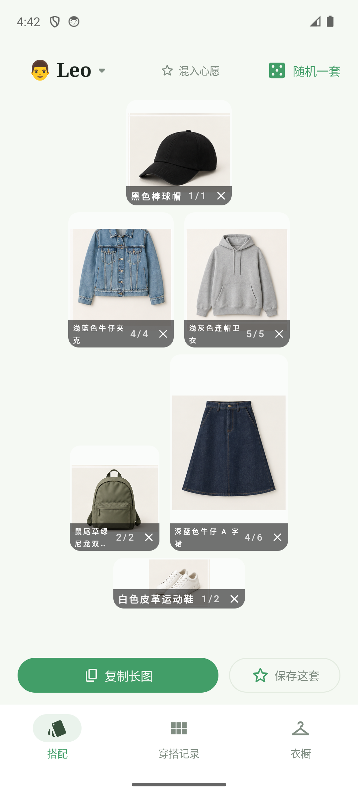
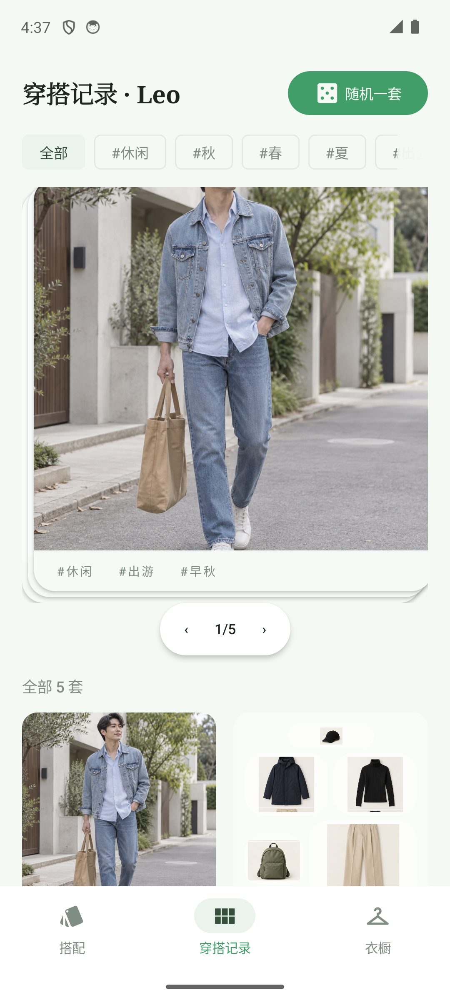
级别：P0 红线/内容受损 · P1 基线差距 · P2 打磨项；前两轮修复项已逐条复验，零回归。
16:34 最新构建装机，W1–W10 + 过程态 + 深色 19 态，像素指纹身份复核
3 代理对表 DESIGN.md，WCAG 逐像素实测、420dpi 换算、先身份核对
uiautomator bounds 探针逐项断言，「视觉小 ≠ 命中小」一律以 dump 定论
| # | 问题 | 涉及页面 | 级别 | 修法（对应线框） |
|---|---|---|---|---|
| C1 | 选中态三重编码：底导航 pill+图标+文字、角色弹层色块+对勾+文字 | 全局 · W2 | P0 | 各砍一通道 → wf-nav / wf-roles |
| C2 | FAB 足迹遮挡卡片 meta 文字（#复古 切半） | W3 | P0 | 列表底部让位 FAB → wf-closet |
| C3 | 白字/accent 3.1–3.3:1 < 4.5（token 级，5+ 处同根因） | W1/W6/W7/W9/W10 | P1 | 底色/作字换 #1D6845 深阶 → fig-contrast |
| C4 | 弱化文本破下限：角标 1.71 / 使用中 2.79 / 计数 3.7 | W9/W2/W1 | P1 | 逐项提到 inkFaint≥3、正文≥4.5 → fig-contrast |
| C5 | 名称条长名孤字折行（三段式字号仍溢出） | W1 | P1 | 单行 ellipsis 禁折行 → wf-namebar |
| C6 | 浅色描边紫灰残留 #79747E（输入框/分段控件 M3 默认 outline） | W10 · 分段 | P2 | 描边换 #808D82 灰绿阶 |
| C7 | W10 顶栏 72dp 空白、底距 10.3dp、与 W1 顶栏形制不一 | W10 | P2 | 核 inset 叠加，补足 20dp 节奏 |
| C8 | 表单文案：括号半角全角混用、星号空格不一、内部术语泄漏 | W10 表单 | P2 | 统一全角，占位改用户语言 |
| C9 | 标签建议行右缘硬切、无 28dp 渐隐（违 it-036 自定规范） | W10 表单 | P2 | 接入 FadingScrollRow |
| C10 | 杂项：FAB 投影、评论✕字形、发送键对比、愿望卡锚点 | W3/W5/W7/W1 | P2 | 减淡/放大/inkFaint/加锚点 |
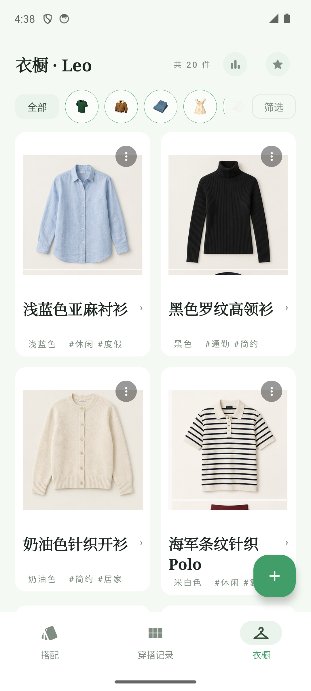
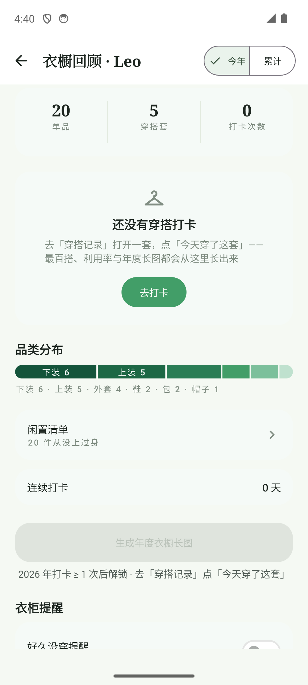
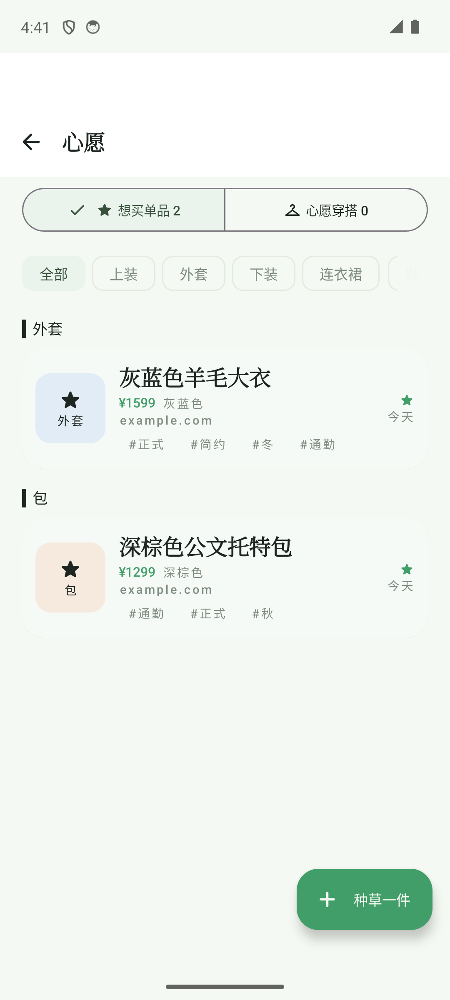
右下 FAB 足迹压住第四张卡 meta 行，「#复古」字形被切半——内容被遮挡是本轮唯一版式类 P0。修法是列表让位而非挪 FAB（FAB 热区 56dp 本身达标）；品类 chip 的 emoji 属 it-012 已知待专项，不计入本轮新增。
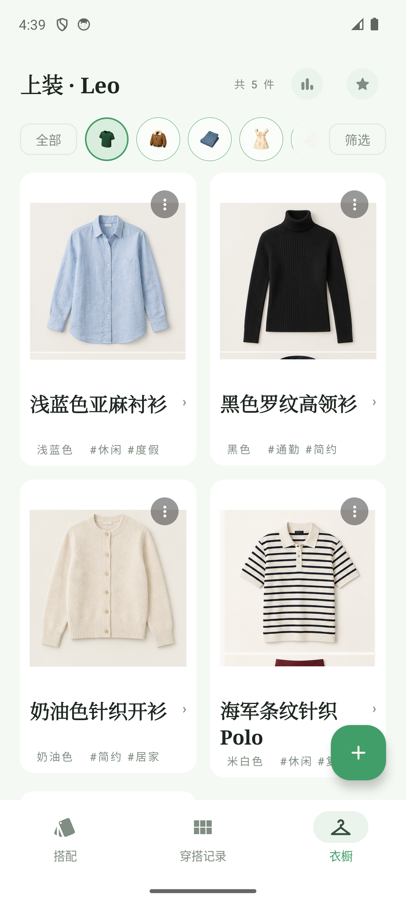
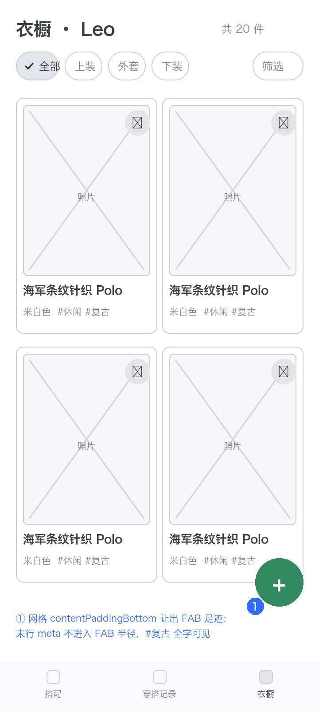
选中语义同时用色块 pill、图标变色、文字变色三个通道承载，正面命中 §5.2 反例清单第 2 条（历史遗留，前两轮未点名）；且选中文字 #429E68 3.24:1 同时不达 §2.2。砍掉文字通道一次解决两个问题。
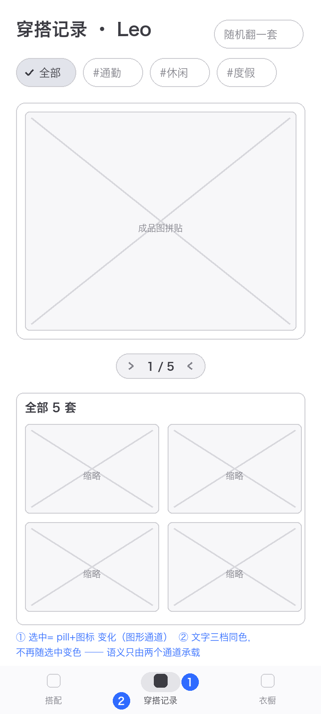
「Leo ✓ 使用中」= 浅绿色块 + 对勾图标 + 文字，三通道同语义，同违 §5.2 反例；「使用中」绿字 2.79:1 连 3:1 硬底都不到。行本身整行可点（411×48dp 实测）——只修编码与文字色。
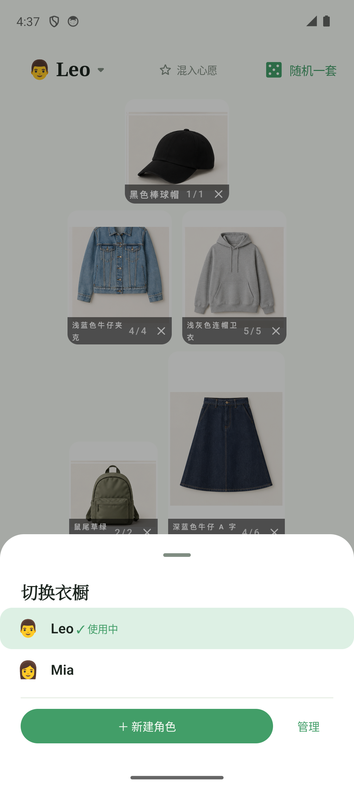
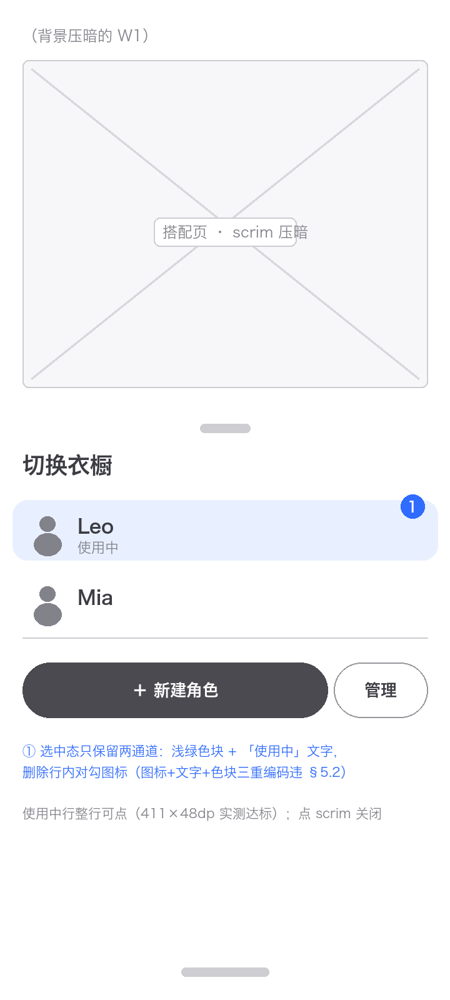
token 级双问题：#429E68 白字全线 3.1–3.3:1 < §2.2 硬表（主按钮/随机/导航/价格/FAB 5+ 处同根因），弱化文本多处跌破 3:1 下限。仓内已有 #1D6845 深阶（比例条在用，6.7:1）——换 token 一次、全站生效。
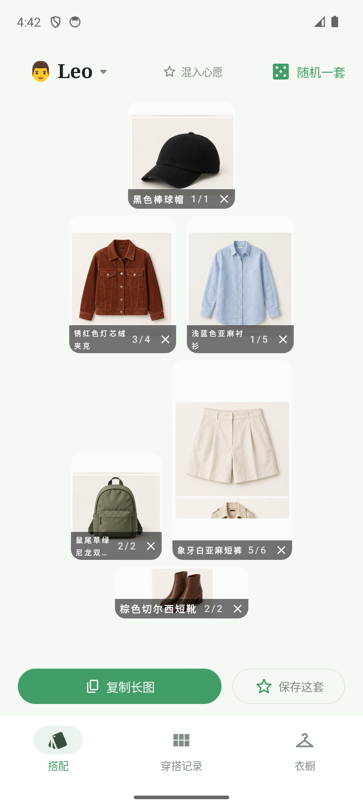
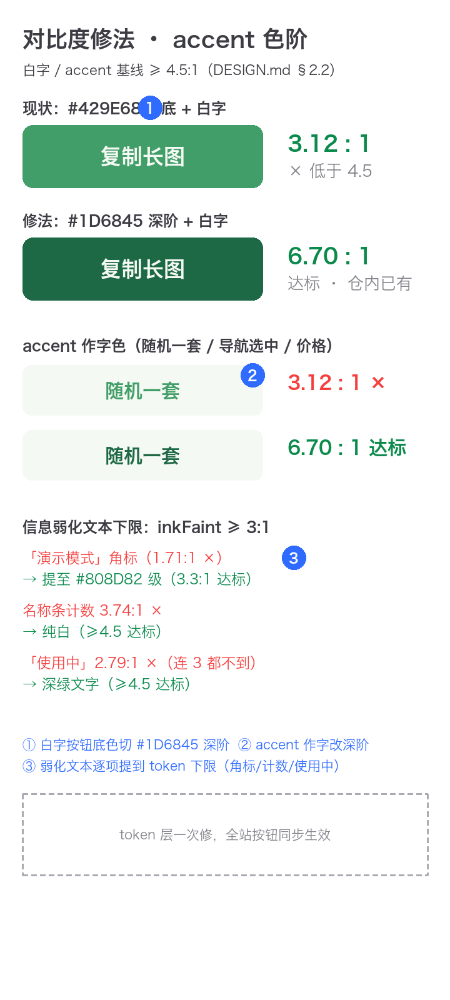
新语料长名（浅蓝色牛仔夹克 / 深蓝色牛仔 A 字裙）在 it-033 三段式字号下仍折出孤字行——「不截断」以单字换行的方式达成，观感比省略号更差。热区无问题（角标/✕ 均 48dp），只修排版。
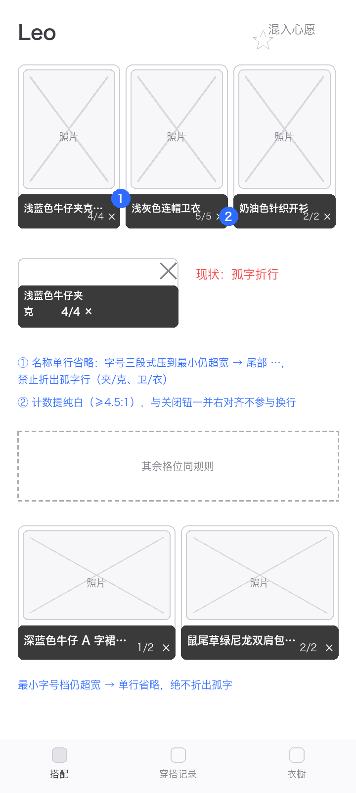
按仓库迭代流程确认后动工；先修共性问题（功能在但用户够不着/猜不到），再修各 App 核心体验。
| 线框 | 内容 | 对应 |
|---|---|---|
| O1 | 底导航与角色弹层选中态砍到双通道（反例 #2 解除） | R3-2 · R3-3 |
| O2 | W3 网格 contentPaddingBottom 让出 FAB 足迹 | R3-1 |
| 线框 | 内容 | 对应 |
|---|---|---|
| O3 | 白字按钮/accent 字换 #1D6845 深阶；角标/计数/使用中逐项提下限 | R3-4 · R3-2 |
| 线框 | 内容 | 对应 |
|---|---|---|
| O4 | 名称条单行省略+计数纯白；紫灰描边/占位文案/渐隐/顶栏节奏一并收口 | R3-5 · C6–C10 |
| 项目 | 结论 |
|---|---|
| 角标循环翻页 | 外套位 tap 后 3/4 → 4/4，页码前进、返回计数 0——C5 可点修复无回归 |
| 热区 bounds 探针 ×12+ | 12+ 处全 48dp：FAB 56、分页双半、chips、格内✕、底栏×4、角色行 411×48、CTA、去打卡——视觉「40dp」判定全部撤回 |
| 分段控件往返 | 今年 ↔ 累计 切换成功；未选侧 61×48dp 可点、选中侧 no-op——行为与热区均正常 |
| W10 吸底 CTA | 「收进想买」初始视口完整可见（45.3dp）——历史 P1 修复未回归 |
| 深色模式色阶 | 底 #10150F 墨绿纸、全 token 命中、主按钮白字 9.08:1——紫灰跑色未回归（浅色描边残留见 C6） |
| 随机一套 | 与初始帧 6 槽位 4 槽不同（帽/包小池再抽中属合理）——随机生效 |
| 混入心愿开启 | 星标高亮 + 提示行出现、各格分母 +1（4/4→4/5、2/2→2/3）——会话级 accent 提示在位 |
| 渲染全程 | 19 态导航 0 FATAL；12c 帧与 12b 字节级重复已删（资产去重） |
| 身份复核 | 19 文件像素指纹与标称一致 100%（本机 Read 串图，取证全程子代理+指纹双轨） |
| 覆盖度备注 | 「添加单品」弹层新语料不可达（八品类全激活）；打卡 0 态使已打卡双按钮态不可达 |
现状截图与改版线框见 assets/ 目录；本报告由 report_template.py 生成，可改数据重出。